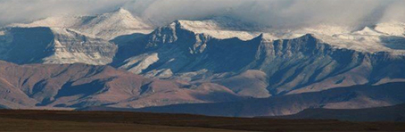

<!DOCTYPE html>
<html lang="en">
<head>
    <meta charset="UTF-8">
    <meta name="viewport" content="width=device-width, initial-scale=1.0">
    <title>Document</title>
</head>
<body>

    <ul>
        <li><a href="index.html">Home</a></li>
        <li><a href="about.html">About Us</a></li>
        <li><a href="products.html">Products and Services</a></li>
        <li><a href="gallery.html">Gallery</a></li>
        <li><a href="about.html">Contact Us</a></li>
    </ul>

    <H1>[Breaking News] - Latest on the Weather</H1>

    <h2><a href="_blank"></a>Snow Covers the ‘berg - Prepare for the Cold</h2>
    
    <p>The cold front approaching the WC is likely to make landfall tonight, Sunday evening bringing with it further cold temperatures to Cape Town, as well as a predicted 2 cm of snow to highest elevations of Table mountain if the weather pattern stays on course. The high mountains of Ceres, Matroosberg, Worcester, and potentially well in to Franschhoek – should all experience some snow activity Monday morning into Monday afternoon. The snowfall may extend further up into the NC with potential snowfall in the Hantamsberg region and Calvinia. Tuesday morning the snowfall could very well reach out over the Kouggaberge and Tsitsikamma mountains.More than likely the snowfall will all be under 5 cm and at higher elevations, but please send us your photos and snow reports as they happen.</p>
    
    
    <h3>Global Digital Network is part of the “News Now Network” (NNN) </h3>
    
    <a href="mailto:info@nnn.co.za?subject=Enquiry from web site">Email Us</a>
</body>
</html>

